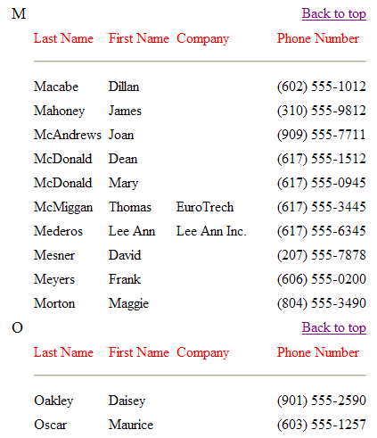

Creating an HTML Report
It is a relatively simple task to "print" a report to an HTML file. This particular example collects all the "pages" of the report into a single file and creates a set of bookmarks that allows the user to quickly find a section of the report.
Example
The following sample prints four fields from the customer table of AlphaSports. First, a script passes report parameters to the report generator.
|
dim params as P dim params.tablename as C dim params.fieldcount as N dim params.fieldnames[4] as C dim params.filename as C params.tablename = "Customer" params.fieldcount = 4 params.fieldnames[1] = "lastname" params.fieldnames[2] = "firstname" params.fieldnames[3] = "company" params.fieldnames[4] = "phone" params.filename = "C:\html_report.htm" html_report(params) |
Second, data goes into a single HTML file. It organizes the file by the first letter of the params.fieldnames[1] field.
|
function html_report as V (params as P) dim tbl as P dim htm as P dim letters as C dim count as N dim total as N dim current_letter as C dim i as N tbl = table.open(params.tablename) ' create a query that retrieves unique first letters from the lastname field tbl.order("left(lastname,1)","","U") letters = "<A name=\"Top\"> </A>" + crlf() ' collect the letters and create links to their bookmarks tbl.fetch_first() while .not. tbl.fetch_eof() letters = letters + "<A href=" + quote("#"+left(eval("tbl." + params.fieldnames[1]),1)) + ">" + left(eval("tbl." + params.fieldnames[1]),1) + "</A>" + crlf() tbl.fetch_next() end while ' create a query that reorders the table using the full lastname field tbl.order("Lastname") ' prepare the variables used in the Status Bar total = tbl.records_get() count = 0 ' create the HTML report file and get a pointer to it htm = file.create(params.filename, FILE_RW_EXCLUSIVE) ' start generating the html content htm.write_line("<html><body><Table>") htm.write_line(letters) 'put in heading for first letter current_letter = left(eval("tbl." + params.fieldnames[1]),1) print_heading(params, local_variables()) run through the table tbl.fetch_first() while .not. tbl.fetch_eof() ' keep track of progress on the Status Bar count = count + 1 StatusBar.Percent(count, total) ' if we found a new first letter if (left(tbl.Lastname,1) <> current_letter) 'break 'put in heading for first letter print_heading(params, local_variables()) end if current_letter = left(eval("tbl." + params.fieldnames[1]),1) ' prepare and print the data from the current record line = "<TR>" + crlf()+ "<TD>" + " " + "</TD>" + crlf() for i = 1 to params.fieldcount line = line + "<TD>" + eval("tbl." + params.fieldnames[i]) + "</TD>" + crlf() next i line = line + "</TR>" htm.write_line(line) tbl.fetch_next() end while ' end the HTML file htm.write_line("</Table></body></html>") htm.close() ' display the file sys_open(params.filename) end function |
This function prints the headings for each group of records.
|
function print_heading as V (params as P, vars as P) dim line as C dim i as N with vars ' create first heading line for the section line = "<TR>" + "<TD><FONT size=+1><A name=" +\ quote(left(eval("tbl." + params.fieldnames[1]),1)) +\ ">" + left(eval("tbl." + params.fieldnames[1]),1) + "</A></font></TD>"+\ "<TD colspan=" + params.fieldcount + " align=right><A href=" +\ quote("#top") + " >Back to top</A></TD></TR>" + crlf() htm.write_line(line) ' create second heading line for the section line = "<TR>" + crlf()+ "<TD>" + " " + "</TD>" + crlf() ' print each field for i = 1 to params.fieldcount line = line + "<TD>" + "<font color=\"#ff0000\">" + params.fieldnamesi + "</font></TD>" + crlf() next i line = line + "</TR>" + crlf()+ "<TR><TD> </TD><TD colspan=" +\ params.fieldcount + "><HR></TD></TR>" + crlf() htm.write_line(line) end with end function |
The following is a sample of the report.

See Also